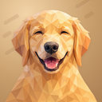
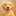
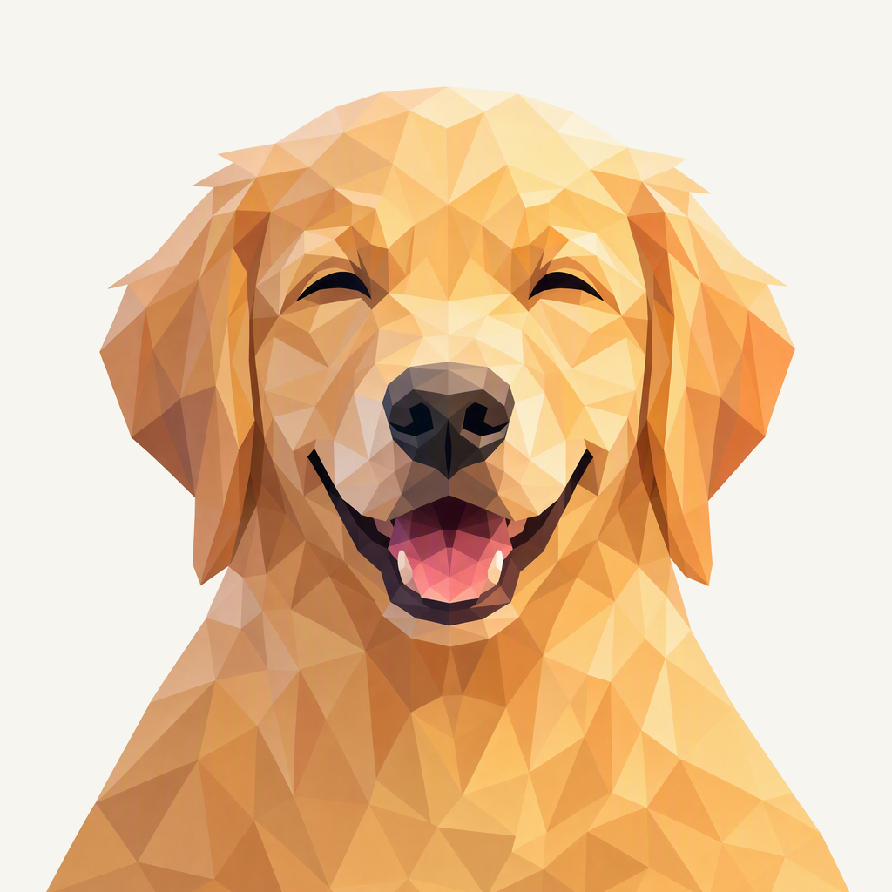
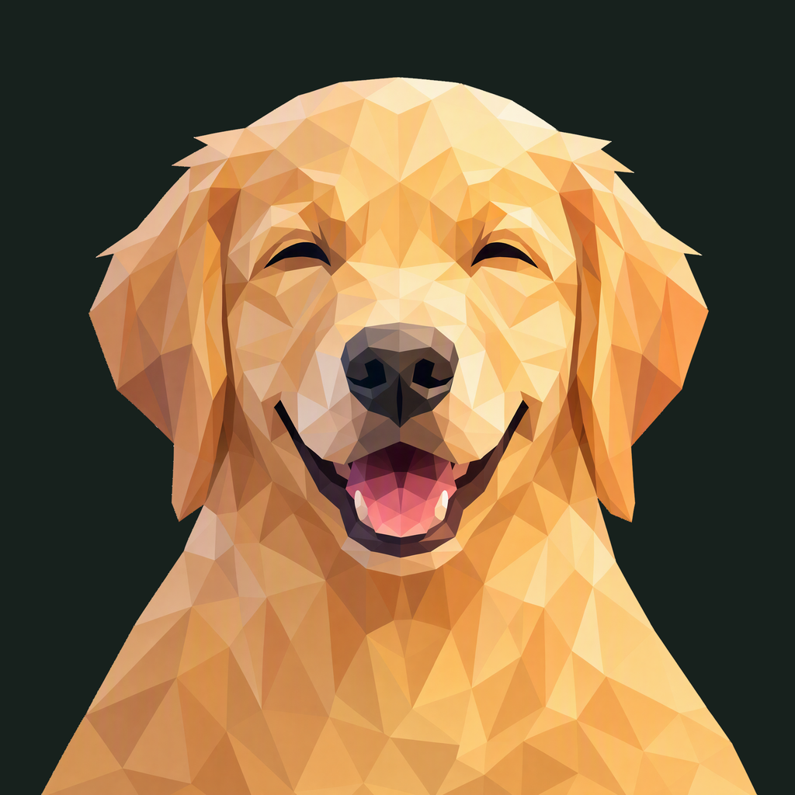

01 / Composition
An open, familiar smile
Both floppy ears and the closed-eye smile remain complete. The chest continues to the lower edge, with breathing room above the head and around the outer fur.
Animal family · Selected Neo study
The same golden smile, with room for both ears and a continuous chest.
Withdrawn before publication · finishing 02
Native 2048 × 2048
01 / Composition
Both floppy ears and the closed-eye smile remain complete. The chest continues to the lower edge, with breathing room above the head and around the outer fur.
02 / Drawing
Connected cream, honey, and gold facets describe the fur without individual hairs. A dark nose anchors the face, and the coral tongue brings warmth to the open smile.
03 / Presentation
A golden paper field carries offset lozenge impressions. Restrained highlights and shallow shadows keep the background tactile without competing with the expression.
The same artwork at actual display sizes.


At 32 px, the closed eyes, dark nose, and coral smile remain distinct. At 16 px, individual fur planes soften into a warm retriever silhouette.
A distinct presentation field, with colors sampled from the native neo artwork.
Select a swatch to copy its hex value. Neo’s existing site primary, #3C83F6, remains a separate UI color.
One foreground, checked on two contrasting backgrounds.


Azure Foundry · gpt-image-2 · native 2048 × 2048
Loading prompt…


{kind=link}
{kind=link}
{kind=link}
{kind=link}
{kind=link}